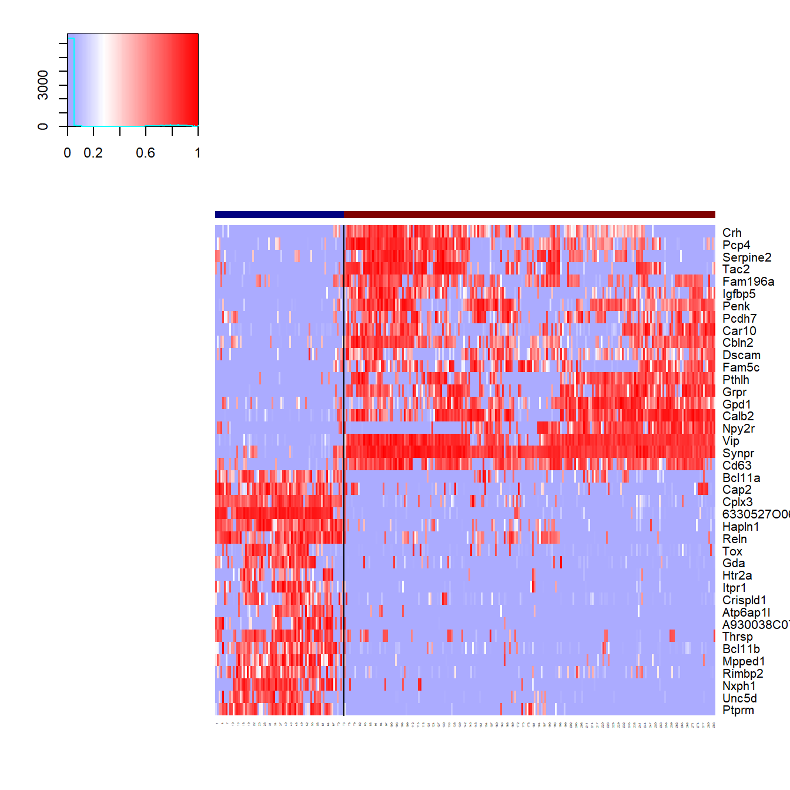
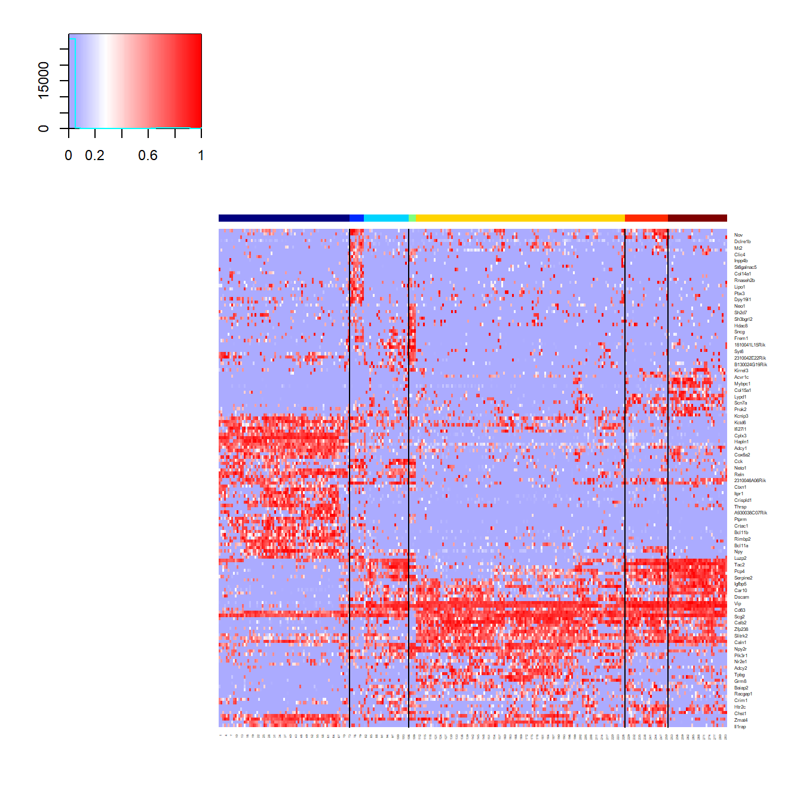
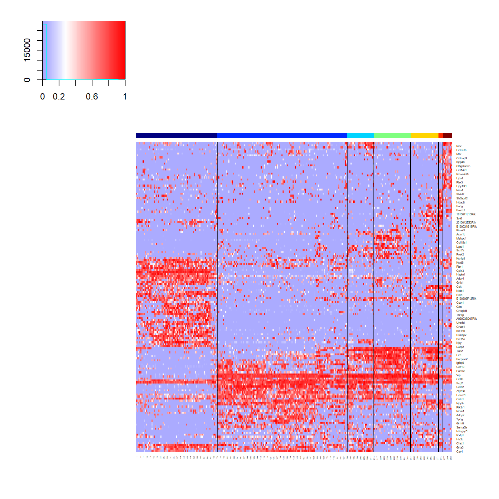

scrattch.hicat
Zizhen Yao
Lucas Graybuck
2019-06-30
scrattch.hicat.RmdOverview of Hierarchical Iterative Clustering for Analysis of Transcriptomics
The scrattch.hicat package offers functions to perform iterative clustering for single cell RNAseq datasets.
The pipeline consists of the following key steps:
* [High variance gene selection]
* [Dimensionality reduction]
* Dimension filtering based on QC correlation
* [Jaccard-Louvain or hierarchichal (Ward) clustering]
* Cluster merging based on presence of differentially expressed genes.
This process is iteratively repeated within each resulting cluster until no more clusters meet differential gene expression and cluster size termination criteria.
We can inspect and visualize the results of consensus clustering:
* Compute marker genes and plot marker heatmaps
* Hierarchical dendrograms
* t-SNE plots
For this vignette, we use a subset of the dataset published in Tasic, et al. (2016) Nature Neuroscience, which is available in the tasic2016data package:
if(!"tasic2016data" %in% rownames(installed.packages())) {
devtools::install_github("AllenInstitute/tasic2016data")
}
library(tasic2016data)This vignette depends on a few other packages, in addition to scrattch.hicat:
Dataset Formatting and Setup
First prepare the datasets
# Load sample annotations (anno)
anno <- tasic_2016_anno
# Make a data.frame of unique cluster id, type, color, and broad type
ref.cl.df <- as.data.frame(unique(anno[,c("primary_type_id", "primary_type_label", "primary_type_color", "broad_type")]))
#standardize cluster annoation with cluster_id, cluster_label and cluster_color. These are the required fields to visualize clusters properly.
colnames(ref.cl.df)[1:3] <- c("cluster_id", "cluster_label", "cluster_color")
# Sort by cluster_id
ref.cl.df <- ref.cl.df[order(ref.cl.df$cluster_id),]
row.names(ref.cl.df) <- ref.cl.df$cluster_id
ref.cl <- setNames(factor(anno$primary_type_id), anno$sample_name)Convert counts to CPM and take log2 transformation
If you have a very large matrix, we recommend you convert it to a sparse matrix using the Matrix package to save memory:
For this demo, we’ll select a small subset of CGE-derived interneurons for clustering. This gives us a set of 284 single-cell transcriptomic profiles to work with.
Parameter specification
The final number of clusters produced by this iterative clustering algorithm is largely determined by the required cell type resolution specified by the user. The cell type resolution is defined by differential expression (DE) criteria between every pair of clusters. The users can specify these criteria ahead of time, for reuse in hicat functions by using the de_param() function.
We compute statistical singificance of DE genes using limma, with two key parameters specified below:
padj.th: adjusted p value threshold for DE genes.
lfc.th: log2 fold change threshold for DE genes.
We also require DE genes to have a relatively binary (on/off) expression pattern, specified by the following parameters:
low.th: The minimum value used to determine whether a gene is detected in a given cell or not. This threshold is applied to log2-transformed, normalized data. The default value is 1. Users can specifiy different thresholds for different genes if necessary.
For every pair of clusters (one as foreground, and the other as background), we define q1, and q2 as the proportion of cells with expression > low.th in the foregound and background cluster respectively.
q1.th: For up regulated genes, q1 should be greater than q1.th in the foreground set.
q2.th: For up regulated genes, q2 should be smaller than q2.th in the background set.
q.diff.th: The difference, defined as abs(q1 - q2)/max(q1, q2) should be greater than q.diff.th.
By default, q1.th = 0.5, q2.th = NULL, and q.diff.th = 0.7.
The user can also ignore these parameters by setting them all to NULL.
For high-depth datasets, like those generated using SMARTerV4 or Smart-Seq2, we recommend starting with q1.th = 0.5 .
For low-depth datasets, like those generated using Dropseq or 10X Genomics, we recommend starting with q1.th = 0.3 due to the generally lower gene detection per cell in these datasets.
When focusing on discrete cell types, set q.diff.th closer to 1.
If splitting cell types based on graded gene expression variation is of interest, adjust q.diff.th closer to 0.
To determine whether two clusters are seperable based on DE genes, we define de.score as the sum of -log10(adjusted Pvalue) for all DE genes. Each gene contributes at most 20 towards the sum. All clusters should have pairwise de.score greater than de.score.th.
For small datasets (#cells < 1000), we recommend de.score.th = 40.
For large datasets (#cells > 10000), we recommend de.score.th = 150.
de.param <- de_param(padj.th = 0.05,
lfc.th = 1,
low.th = 1,
q1.th = 0.5,
q.diff.th = 0.7,
de.score.th = 40)scrattch.hicat can perform clustering using WGCNA or PCA for dimensionality reduction. WGCNA mode is good for detecting rare clusters and provides cleaner cluster boundaries, while PCA is more scalable to large datasets, captures combinatorial marker expression patterns more effectively, and is more sensitive to low-depth datasets.
We recommend using WGCNA for smaller, high-depth datasets (< 4,000 samples; > 5,000 genes detecter per sample), and PCA for large or low-coverage datasets (> 4,000 samples or < 5,000 genes detected per sample). Another consideration is that WGCNA is considerably slower than PCA. Note that while the whole clustering pipeline scales quite well with the number of cells, the running time heavily depends on the cell type complexity as clustering is iterative.
First, let us just run one round of clustering using PCA mode using high stringency to check the broad cell types
broad.param <- de_param(padj.th = 0.05,
lfc.th = 1,
low.th = 1,
q1.th = 0.5,
q.diff.th = 0.7,
de.score.th = 500)
onestep.result <- onestep_clust(norm.dat,
select.cells = select.cells,
dim.method = "pca",
de.param = broad.param)Take a quick look at the clustering heatmap
display.result <- display_cl(cl = onestep.result$cl,
norm.dat = norm.dat,
plot = TRUE,
de.param = de.param)
Apply iterative clustering pipeline for finer splits based on existing clusters using a more relaxed threshold.
PCA.clust.result <- iter_clust(norm.dat,
select.cells = select.cells,
dim.method = "pca",
de.param = de.param,
result = onestep.result)You can also apply iterative clustering pipeline from the beginning by specifying substantially stringent clustering requirements and leaving out the result parameter:
PCA.clust.result <- iter_clust(norm.dat,
select.cells = select.cells,
dim.method = "pca",
de.param = de.param)We should get more clusters than in the previous run:
display.result <- display_cl(cl = PCA.clust.result$cl,
norm.dat = norm.dat,
plot = TRUE,
de.param = de.param)
Eliminate technical artfacts at dimension reduction state
Technical variation that should be masked during the clustering process can be specified using a matrix that we term rm.eigen. If batch effects are present, you can use the first principle component of batch-specific genes as a column in rm.eigen.
QC-related factors, such as sequencing depth, gene detection limits, and fraction of reads mapped to transcriptome also tend to correlate with systemetic technical variation in gene expression.
You can directly use proper transformation of these QC-related variables, or use the first principle component of the genes that correlate with these QC factors. The latter approach tends to work better with real datasets. When rm.eigen is specified, any reduced-dimension vectors during clustering that have correlation greater than rm.th with any columns of rm.eigen are ignored during clustering.
We recommend that users to first explore their data by running the clustering pipeline without setting rm.eigen. If any batch specific or QC-driven clusters appear to cause problems, the user can create rm.eigen as demonstrated below, and rerun the pipeline.
Cluster merging based on presence of differentially expressed genes.
Throughout the iterative clustering process performed by iter_clust(), the function checked whether clusters at any iteration can be seperated by DEG. However, clusters from different iterations can end up very similar. Thus, it is necessary to check whether all the clusters are seperable by DEGs in the end. Clusters are merged in an order defined by the pairs of clusters that are nearest neighbors, which are computed in a reduced dimension space defined by rd.dat.
Here, we use the set of markers produced by iter_clust() to define the reduced dimensions:
compare and annotate clusters against reference cluster annotation.
In this demo, we have previously derived cluster labels from Tasic, et al. (2016). To see how these cluster calls match up to those generated by scrattch.hicat, we can compare and annotate the clusters based on the reference cluster annotation. 
Now Let’s compute DE genes between every pair of clusters. To generate the heatmap, use the top 20 DE genes b default. If you have many clusters, the heatmap can be too large to display. The users may choose different “n.markers”
display.result = display_cl(cl,
norm.dat,
plot = TRUE,
de.param = de.param,
min.sep = 4,
n.markers = 20)
At this point, check the clusters manually to determine if some clusters are outliers. Define cl.clean as the clusters after removing outliers.
We find it helpful to use hierarchical structure to categorize cell types at different resolution. To build dendrogram, we use cluster-cluster correlation matrix based on cluster medians of the top 50 genes between every pair of clusters with select_markers() and build_dend(). The confidence of each branch point can be estimated by bootstrap approach implemented by pvclust package, which is encapsulated by “build_dend” function.
select.markers <- select_markers(norm.dat,
cl.clean,
de.genes = de.genes,
n.markers = 50)$markers
marker.dat <- norm.dat[select.markers, ]
cl.med <- get_cl_medians(marker.dat, cl)
## The prefered order for the leaf nodes.
l.rank <- setNames(1:nrow(cl.df), row.names(cl.df))
## Color of the leaf nodes.
l.color <- setNames(as.character(cl.df$cluster_color), row.names(cl.df))
dend.result <- build_dend(cl.med[,levels(cl.clean)],
l.rank,
l.color,
nboot = 100)
dend <- dend.result$dend
###attach cluster labels to the leafs of the tree
dend.labeled <- dend
labels(dend.labeled) <- cl.df[labels(dend), "cluster_label"]
plot(dend.labeled)
Reorder the clusters based on the dendrogram:
cl.clean <- setNames(factor(as.character(cl.clean), levels = labels(dend)), names(cl.clean))
cl.df.clean <- cl.df[levels(cl.clean),]Plot cluster-cluster correlation matrix:
cl.cor <- cor(cl.med)
rownames(cl.cor) <- colnames(cl.cor) <- cl.df[row.names(cl.cor), "cluster_label"]
heatmap.3(cl.cor,
Rowv = dend,
Colv = dend,
trace = "none",
col = heat.colors(100),
cexRow = 0.8,
cexCol = 0.8,
breaks = c(-0.2, 0.2, seq(0.2, 1, length.out = 99)))
t-SNE plots
Generate t-SNE coordinates and a plot using plot_tsne_cl():
tsne.result <- plot_tsne_cl(norm.dat,
select.markers,
cl,
cl.df,
fn.size = 5,
cex = 1)
tsne.df <- tsne.result$tsne.df
tsne.result$g
Plot expression of a set of genes using the t-SNE coordinates with plot_tsne_gene():
tsne.df <- tsne.result$tsne.df
## 6330527O06Rik is a synonym for Lamp5, and A930038C07Rik is a synonym for Ndnf
markers <- c("Vip","6330527O06Rik","Sncg","Cxcl14","Gpc3","A930038C07Rik")
gene.plots <- plot_tsne_gene(tsne.df,
norm.dat,
markers)
multiplot(plotlist = gene.plots,
cols = 3)